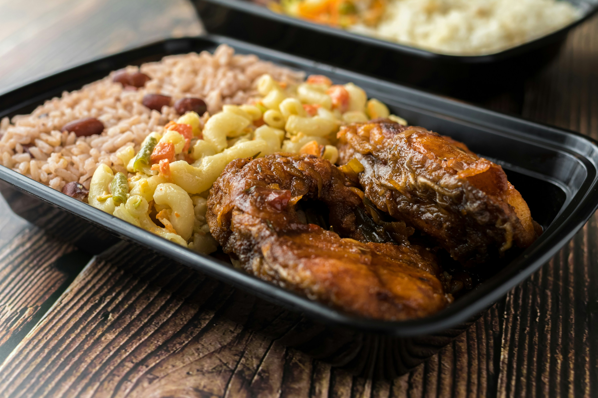
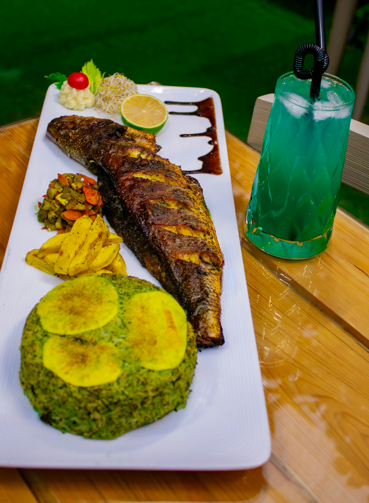
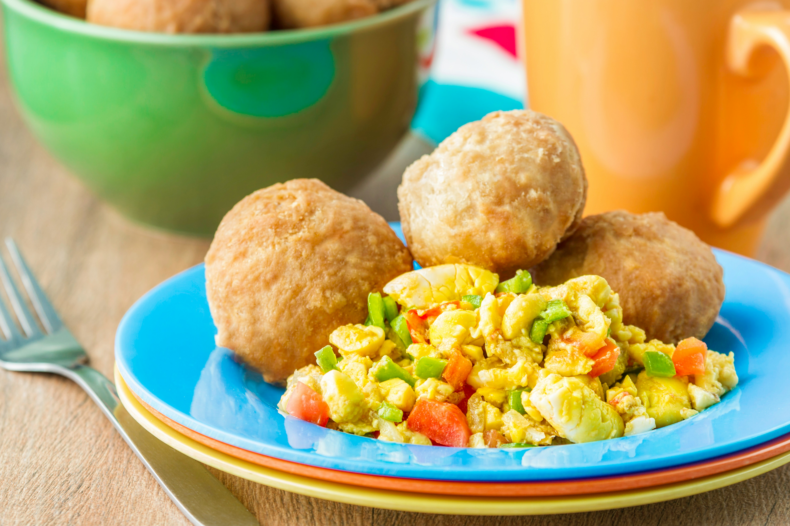

Kingston Eats is the best website to find the top Restaurants in Kingston. Explore our pages to see more details.
See featured restaurants
Sea Breeze Grill
Palisadoes

Island Fusion Kitchen
Half Way Tree

Harbour Catch
Port Royal
About
Kingston Eats is the best site if you want to find delicious restaurants around the city. From jerk stops, international cuisine to seafood by the water, every place is chosen for its food and its character. See what is open, learn a little about each restaurant, and request a table in a minute.
Our Featured restaurants
Reservations
Found a place you like? Send a table request with the date you would like and party size.
Reserve a table